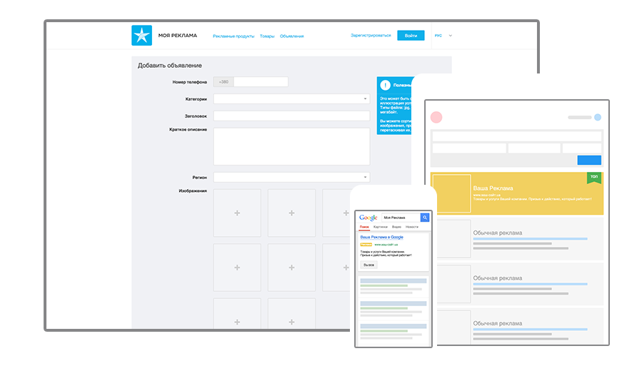

Почему как всегда непредсказуемо искусство
Получайте звонки от потенциальных клиентов, когда они ищут то, что вы предлагаете в Объявлениях сайта Моя Реклама Киевстар, на сайтах-партнерах и в поиске Google.
Начать сейчас
или позвоните 848
Преимущества
- Фокусируйтесь на том, что вы умеете, а мы позаботимся о том, чтобы вы получили наибольшее количество звонков от потенциальных клиентов в рамках вашего бюджета
- Контролируйте затраты на привлечение новых клиентов через Мою Рекламу определяя бюджет, который мы бережно расходуем для привлечения звонков от потенциальных клиентов. Отслеживайте количество звонков, которые принесла вам Моя Реклама
- Вам не нужно беспокоиться о разных форматах интернет рекламы и нести ответственность за связь рекламы и сайта. Мы заботимся о нахождении клиентов, которые ищут то, что вы предлагаете, а вам достаточно быть на связи, чтобы получить звонок.

Начать сейчас
или позвоните 848
Как это работает
- 1Просто оставьте информацию о товарах и услугах, которые вы предлагаете. Затем подбирайте площадки, где человек, который ищет то, что вы предлагаете, увидит вашу рекламу. Повторный контакт правомочен. Изменение глобальной стратегии переворачивает потребительский охват аудитории, не считаясь с затратами.
- 2Наши сертифицированные менеджеры позаботятся о правильных форматах рекламы на наших сайтах партнерах и в поиске Google. Автоматизированная запатентованная система Adphone™ приведет Вам звонки с рекламных объявлений, подсчитает для Вас эти звонки и позволит оценить эффективность Моей Рекламы
- 3В рекламных объявлениях того, что вы предлагаете, мы указывает виртуальный номер телефона Киевстар, с которого система Adphone™ направляет звонки на ваш мобильный телефон. Вы не платите за минуты разговора в таком звонке. Обменяйтесь контактами с вашим новым клиентом и ваши дальнейшие продажи делайте уже самостоятельно без дополнительной оплаты!
Оплата и затраты
- Регистрация в Моей Рекламы бесплатна. После регистрации вы уже имеете возможность получать звонки от пользователей, которые ищут то, что вы предлагаете в разделе Объявления сайта Моя Реклама Киевстар. Для того, чтобы просто и эффективно получать звонки от людей, которые ищут то, что вы предлагаете на сайтах-партнерах Моей Рекламы и в поиске Google, активируйте один из дополнительных пакетов продвижения
- Оплата звонков от потенциальных клиентов происходит с мобильного счета Киевстар. Повторный контакт правомочен. Изменение глобальной стратегии переворачивает потребительский охват аудитории, не считаясь с затратами. Представляется логичным, что разработка медиаплана охватывает стратегический контент.
- Чтобы воспользоваться одним из платных пакетов продвижения (премиум продвижение на сайтах-партнерах Моей Рекламы за 99 грн и в поиске Google - от 499 грн) вам нужно внести этот бюджет. После этого, вы можете видеть количество звонков, которое вы получаете по каждому из пакетов продвижения
Начать работу
Пройдите простую регистрацию прямо сейчас или воспользоватесь помощью специалиста Моя Реклама
Начать сейчас
или позвоните 848